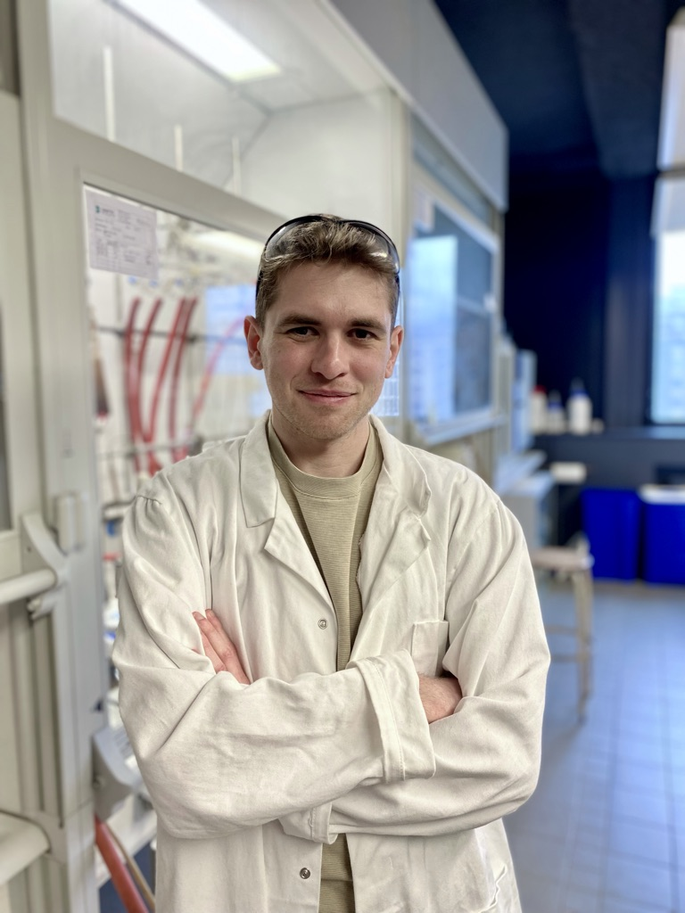

Ajoute un fichier
photo-robin.jpg
dans le dossier
Docteur en Physique et Chimie des matériaux, j'ai passé plusieurs années de recherche en laboratoires français et internationaux qui m'ont permis d'explorer et affiner ma compréhension de la matière à l'échelle micro et macroscopique. Désormais tourné vers l'enseignement, je souhaite partager ce qui m'a toujours fasciné dans cette matière : sa capacité à transformer notre regard sur le monde, une expérience à la fois.
Ce site a été créé dans un objectif purement pédagogique. Il sera modifié et complété tout au long de l'année scolaire et me permet de créer un cours animé, ainsi que des activités pédagogiques interactives. Ceci me permet de varier les supports d'information pour que les élèves puissent comprendre et assimiler les concepts chimiques & physiques à leur rythme et selon leur besoin.
Parcours
— 2020-2023
ATER
— 2023-2024
— 2024-2026
— 2026-...
Formation & distinctions
- Doctorat en Physique et Chimie des matériaux Sorbonne Université, 2020-2023 — « Nouveaux matériaux à gains pour des lasers organiques à l'état solide de hautes performances »
- Prix des Jeunes Talents de la Chimie — Société Chimique de France (SCF), section Île-de-France 2024 — récompensant mes travaux de thèse
- Bourse postdoctorale JSPS (Japan Society for the Promotion of Science) 2024-2026 — recherche postdoctorale à l'OIST, au Japon
Enseignement
-
Professeur de Physique-Chimie — 2026-...
EFI Casablanca
- 4ème — Physique-Chimie
- 2nde — Physique-Chimie
- 1ère spécialité Physique-Chimie
- Terminale — Enseignement Scientifique
-
Attaché Temporaire d'Enseignement et de Recherche (ATER) — 2023-2024
Sorbonne Université
- Licence 2e année de Chimie — UE Chimie Organique
- Licence 3e année de Chimie — UE Biomolécules
- Master 1 de Chimie — UE Polymères
- Master 1 de Chimie — UE Projet Bibliographique
Polytech Sorbonne — école d'ingénieur- 2e année de prépa — UE Chimie Organique
-
Chargé d'enseignements — 2020-2023
Sorbonne Université
- Licence 2e année de Chimie — UE Chimie Organique
- Licence 3e année de Chimie — UE Biomolécules